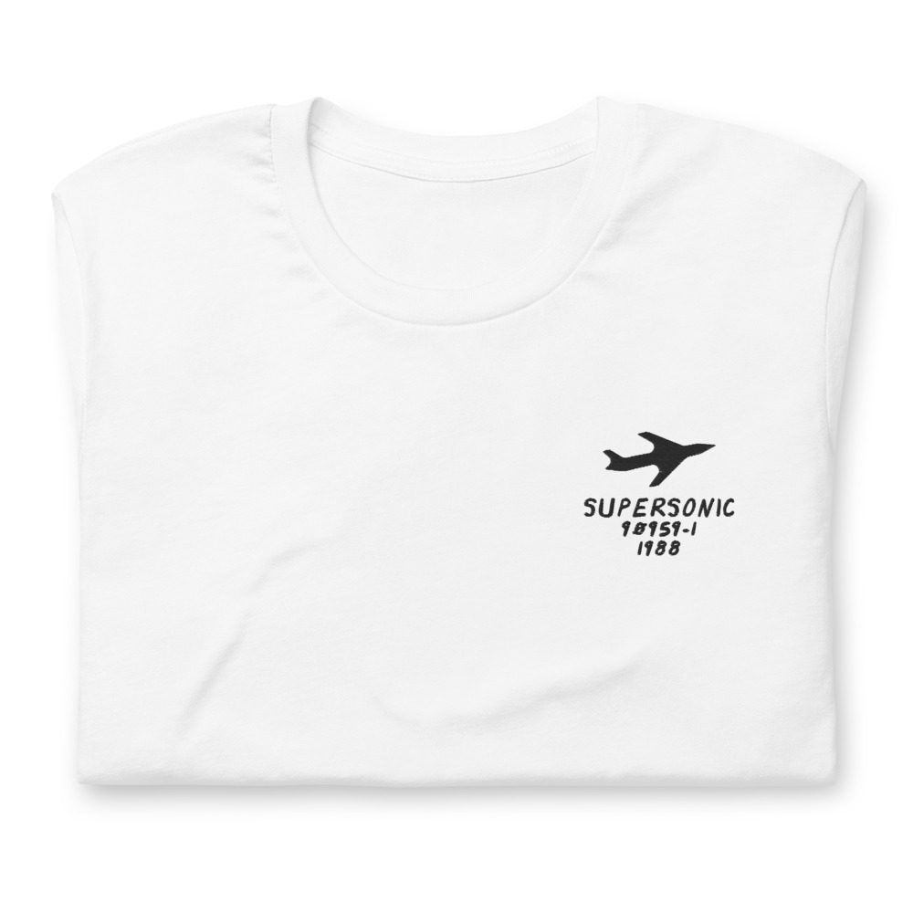
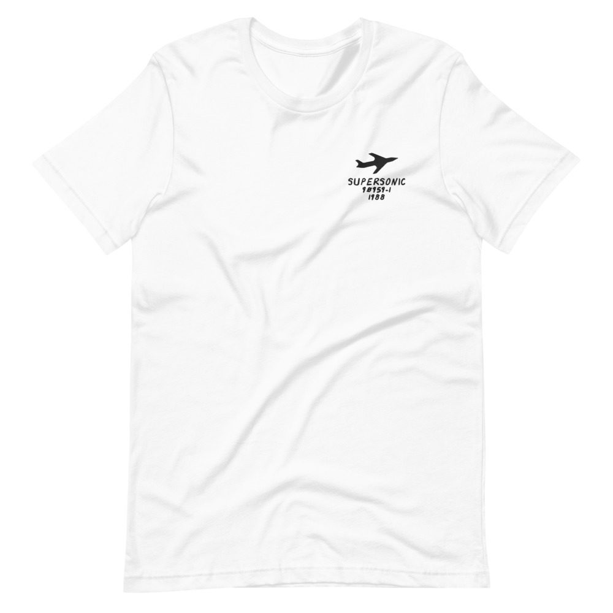

J.J. Fad – Supersonic - The Album
“Supersonic,” on Eazy-E’s Ruthless Records.
LP · Ruthless / Atco 90959-1 · 1988
Ungraded, checked before it ships
Comes with its own shirt: a white tee embroidered on the chest with its title, catalog number and year in my handwriting. Pick a size at checkout. It’s made for you and ships on its own.


Buy $65
Play a track
Side 1
- Supersonic3:53
- Way Out2:49
- Blame It On The Muzick3:47
- In The Mix3:32
- Eenie Meenie Beats2:55
Side 2
- My Dope Intro3:38
- Let’s Get Hyped3:41
- Now Really3:20
- Time Tah Get Stupid1:55
- Is It Love3:04
Backing Vocals
Baby-D, Dr. Dre, Eazy-E, Lay Law, M.C.J.B., MC Ren, Sassy C, Stan “The Guitar Man” Jones, The Arabian Prince, Yella
Guitar
Stan “The Guitar Man” Jones
Lead Vocals
Baby-D, M.C.J.B., Sassy C
Scratches
DJ Train
Produced by The Arabian Prince, Eric Wright, Dr. Dre, Yella